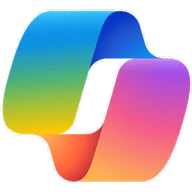
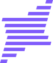

QUESTION
AI기초 개념 이해
질문 작성 · 문서 요약
질문 작성 · 문서 요약
01 전 직원
AI 리터러시
AI 개념을 이해하고,
간단한 업무 실습을 시작합니다.
업종과 직무에 맞는 실습으로
AI를 배우고 실제 업무에 활용하도록 돕습니다.
AI EDUCATION / 4 STEPS
먼저, 우리 업무를 이해합니다
업무와 구성원의 현재 활용 수준을 살펴봅니다.
필요한 배움에 맞춰 연결합니다
구성원 수준에 맞춰 교육 과정을 연결합니다.
직접 해보며 활용을 익힙니다
문서 요약부터 업무 적용까지 직접 익힙니다.
70% 실습배움을 실제 업무로 이어갑니다
배운 내용을 실제 업무에 연결합니다.
다양한 조직의 업무 현장에서
함께한 AI 교육
구성원의 수준과 직무에 맞춰 필요한 교육부터 시작합니다.
AI 개념을 이해하고,
간단한 업무 실습을 시작합니다.
문서부터 데이터까지,
실제 직무의 문제를 다룹니다.
에이전트·LLM 활용과
전문 콘텐츠 제작을 심화합니다.
조직의 도입 방향과
AI 전략·거버넌스를 설계합니다.
AI의 기본 개념과 사용법을 익히고, 간단한 업무 실습으로 활용의 기초를 다집니다. AI를 처음 접하는 구성원도 업무 환경에 맞는 입문 과정부터 시작할 수 있습니다.
문서 작성부터 데이터 분석, 업무자동화까지. 직무와 업종에 맞는 실제 업무 시나리오로 실습합니다.
AI 에이전트·LLM 고급 활용부터 전문 콘텐츠 제작까지. 전문 직무에 맞는 심화 과정을 선택합니다.
경영진의 AI 전략부터 조직의 도입 방향까지. AX 전환을 다루는 임원·기획 과정을 운영합니다.
 ChatGPT
ChatGPT
Copilot
Solar우리 조직의 업무와 구성원에게 필요한 과정을 설계합니다.
직무별 시나리오로 ChatGPT부터 AI 에이전트·LLM 고급 활용까지. 일하는 방식을 바꾸는 실무 중심 교육입니다.
생성형 AI 개념과 사용법을 익히고, 직무별 업무 활용을 심화합니다.
업무 처리 흐름을 실습하고, 조직별 AI 활용 역량을 강화합니다.
조직 규모와 구성원 수준을 고려해 실제 업무 시나리오로 실습합니다.

공공기관의 업무와 현장을 고려한 AI 교육. 공문서 자동화부터 공공데이터 분석까지 연결합니다.
공공기관 구성원의 수준과 업무에 맞춰 AI 활용의 기초를 익힙니다.
공문서 자동화와 공공데이터 분석을 실제 업무와 연결합니다.
민원응대 AI 활용과 전문가 코칭으로 업무 적용을 돕습니다.

제조데이터를 이해하고 현장의 문제를 풀어갑니다. 스마트팩토리 기초부터 공정 최적화·피지컬 AI까지.
제조 현장의 데이터와 AI 활용의 기초를 학습합니다.
고장 예측, 비전검사와 품질검출을 다룹니다.
공정 최적화와 피지컬 AI로 제조 현장의 활용 범위를 넓힙니다.

문제·주제 설계부터 평가와 결과 확산까지,
대회의 전 과정을 지원합니다.
기관의 실제 과제를 바탕으로
대회 주제를 설계합니다.
참가자를 모집하고
일정과 참여를 안내합니다.
목표와 주제에 맞춰
대회 운영을 지원합니다.
평가 기준에 따라 심사해
우수 팀을 시상합니다.
결과·사례를 정리해
보고서·사례집을 만듭니다.
데이터 분석부터 머신러닝까지.
분야별 전문 강사진과 함께합니다.
데이터 분석 전문 강사

비즈니스 데이터 분석 전문 강사

前 S기업 텍스트마이닝 프로젝트 자문
FAQ
먼저 조직의 AI 활용 수준을 진단하고, 업종과 직무에 맞춰 과정을 설계합니다. 실습 70% 비중으로 교육하고, 교육 뒤에는 현업에 정착하도록 지원합니다.
과정은 AI 리터러시부터 직무별 AI 활용 교육, AI 에이전트·LLM 심화까지 네 수준으로 나뉩니다.
네. AI 리터러시 과정은 AI를 처음 접하는 구성원을 위한 입문 과정입니다. 생성형 AI의 기본 개념과 사용법을 익히고, 질문 작성과 문서 요약 같은 기초 실습부터 시작합니다.
구성원의 현재 수준과 업무 환경에 맞춰 시작할 과정을 선택할 수 있습니다.
네. 기업·공공기관·제조 현장의 업무 특성과 구성원 수준에 맞춰 교육 주제와 실습을 설계합니다.
문서 작성, 공공데이터 분석, 제조데이터 활용 등 실제 업무 시나리오를 바탕으로 필요한 과정을 구성합니다.
ChatGPT, Claude, Gemini, Microsoft 365 Copilot, Solar 등 실무에 활용하는 AI 도구를 다룹니다.
교육 목표와 직무에 맞춰 활용할 도구와 실습 내용을 구성합니다.
문서 작성·요약, 엑셀 및 공공데이터 분석, 업무자동화 등 실제 업무와 연결되는 주제로 실습합니다.
실습 70% 비중의 교육을 통해 도구의 기능을 익히는 데서 나아가 업무에 적용하는 방법을 배웁니다.
네. AI 에이전트·LLM 고급 활용, 전문 콘텐츠 제작 등 전문 직무를 위한 심화 과정을 운영합니다.
임원·기획 담당자를 위한 AI 전략, 전사 도입 방향, AI 윤리와 거버넌스 과정도 구성할 수 있습니다.
네. 문제·주제 설계부터 참가자 모집·사전 교육, 대회 운영, 평가·시상, 결과 확산까지 다섯 단계로 지원합니다.
기관의 실제 과제를 바탕으로 주제를 설계하고, 결과와 우수 사례를 보고서·사례집으로 정리합니다.
교육 대상과 직무, 구성원의 현재 AI 활용 수준, 교육으로 해결하고 싶은 업무나 희망 주제를 알려주시면 교육 방향을 구체화하는 데 도움이 됩니다.
맞춤형 교육 상담하기